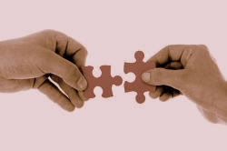

Function words

10 classes of words are usually recognised in English. These
are sometimes called 'parts of speech'.
Of these, some are 'open-class items' and some are called 'closed system
items'. If you don't know the difference, go to
the guide to word class and look through
that. Then shut that to come back to this page.
 |
Two sorts of words |
Take a look at this sentence:
- The glumpy finkleblender in the dwoodledam bongled bederously and flummbered all my quitchicants.
In this sentence some of the words have been replaced by
nonsense.
What's important here is that we can make a stab at the meaning of the
sentence like this:
| The glumpy finkleblender | We can guess that
glumpy is an adjective
describing the noun finkleblender
because of the analogy with other adjectives (such as wonky, shaky,
slippery, happy etc.). We can also guess that the finkleblender is something or someone that performs an action by analogy with blender, gardener, writer, mixer and so on (it may even blend finkles). Because the phrase is introduced by the definite article (the) we can compare it to something like The swanky juice-maker or The wonky lawnmower. |
| in the dwoodledam | This is obviously a place and a noun
because a) something can be in it and b) it is preceded by the definite article. |
| bongled bederously | We can guess the verb is bongle and it has a regular past tense. We can also surmise that bederously is an adverb from the adjective bederous because it follows the verb and ends in -ly. |
| and flummbered all my quitchicants | Again,
flummber is probably a regular verb which takes an object and
quitchicants is a plural noun
following all my. We also know that the quitchicants have been flummbered by a finkleblender, by the way. |
Easy. Now try it with the second sentence:
- Fleeb machine infuriated gruttle bibgle hoblem extent gringle jid threw jadd fotig immediately.
Hmm. Not so easy. We can understand that the sentence is probably about a machine and anger but that's about all because we can't see the relationships that the words have with each other.
What made sentence 2 more difficult to understand than sentence 1? Click here when you have some sort of answer.
In Sentence 1 the words that have been replaced with nonsense
are content words.
In Sentence 2 all the function words have been
replaced.
The moral in the story is that meaning is made up not only of the meanings of the words but of the grammatical function and relationships between the words. We need both to make any kind of sense.
|  |
Function words |
Function words are words which are only meaningful when they are in
company with other words.
For example. If you say house to people who speak
English, they will know what you mean but if you say at, they
are unlikely to have a clue what you mean.
(By the way, this site uses the term 'Function words' but you may see
the same concept called grammatical words or structure words or even synsemantic words.)
Function words are all closed system items. They are closed in the sense that we do not often add new function words to a language in the way that we can add new content words for new items and ideas.
Which of the following word classes are function words and which are content words?
nouns | demonstratives | verbs | conjunctions | prepositions | adverbs | articles | pronouns | adjectives | interjections
Click here when you have an answer.
You should have this list:
| Content words | Function words |
| noun –
Mary, laptop, ashtray, Prime
Minister adjective – happy, new, uncomfortable adverb – sadly, very, often verb – go, smoke, lift |
article –
a(n), the demonstrative – this, that, those pronoun – he, she, it preposition – of, without, in front of conjunction – and, when, although, because interjection – ouch, ugh, oh |
There are some things to note:
- Some verbs are considered function words.
These include modal auxiliary verbs such as can, might, should etc. which only carry meaning combined with a content-word verb such as decide. Standing alone, could has no obvious meaning but combined with imagine, for example, it does. - Some other verbs are similar. These include be,
get, do and have.
These are only function words when they act to form
part of a tense or other structure. They are, in fact,
primary auxiliary verbs. For example,
I have a house in Miami – the verb have is not operating as a function word here because it has meaning – i.e., own.
I have been gardening – here, both have and been are function words because they are making a tense structure, not carrying meaning apart from a grammatical one.
Do you want a drink? – here do is a function word which English uses to make a question form in some tenses.
I'll do the work – here do is not a function word because it carries lexical meaning – i.e., perform. - There are some other words (sometimes called particles) which show the attitude of the speaker rather than carrying meaning per se. Words such as Well, ..., if, but etc. do not always act as conjunctions joining clauses but can simply signal attitude.
- Interjections such as ouch! certainly do carry
meaning but they are considered function words because you can't
actually define the meaning and it may shift depending on
circumstances. That word could mean, for example:
She's singing off key
or
I have hurt myself. - Words like no, right, yes, maybe are also considered function words for similar reasons. These are sometimes called pro-sentences because they can act as whole utterances in themselves.
The General Service Word list
The General Service List (GSL) is a list of roughly 2000 words
published by Michael West in 1953. The words were selected to
represent the most frequent words of English and were taken from
a corpus of written English.
(http://en.wikipedia.org/wiki/General_Service_List)
Note the date: 1953. Of course, the list has been updated since then (go to the Wikipedia article for links to updated lists) but the list of function words remains serviceable simply because these are closed system items. The original General Service List did not contain some nouns and verbs (such as computer and click) which are now frequent over 60 years later because times change. Function words don't.
 |
The list of function words |
| Conjunctions | Determiners | Prepositions | Pronouns | ||
|
after although and as because before both but either for however if neither nor once or since so than that therefore though thus till unless until when whenever where wherever whether while yet |
a all another any both each either every neither no other per some that the these this those whatever whichever |
about above across after against ahead along among amongst around as at bar before behind below beneath beside besides between beyond but by down during except for from in inside into less like |
near of off on onto opposite outside over past per round save since through till to toward under underneath until up upon with within without |
all another any anybody anyone anything both each either everybody everyone everything few he I it many mine neither nobody none nothing one other several she some somebody someone something that these they |
this those we what whatever which whichever who whoever whom whose you |
In this list, articles count as determiners and so do
demonstratives.
No attempt has been made to list interjections or pro-sentences.
Alert people will have noticed that some words appear in more
than one column. That's because they can function as different
word classes in different environments.
Examples:
- another can be a determiner:
I want another beer
or a pronoun
A beer was provided and another for my friend
The word both can do the same sort of thing:
I wanted both beers and both were provided - either can function as a conjunction
Either you do it or I must do it
or as a determiner:
Either beer will do
or as a pronoun
Please don't give me either - since can be a
conjunction
I'll tell you since you ask
and a preposition
I have been here since Tuesday - these can be a determiner:
these beers are good
or a pronoun:
... but these are better
And so on.
There's no proper test on this but to
check you understand, identify the function words and what sort of
functions they are performing in this sentence.
When you have done that, click here.
Can you tell me the difference between content words and function words?

 |
Classroom implications |
This section does not consider teaching approaches to function words. There are none. The range of types and functions means that lessons, or a series of lessons, can only sensibly be focused on small subgroups of function words such as:
- conjunctions which add information (additives) or those which contrast
- indefinite pronouns (any, some, every etc.)
- the definite article
- prepositions related to proximity (near, at, against, beside etc.)
- Don't be tempted to think that because function words are so
familiar to you that they will be easy for learners to
understand and use. All languages have ways of making
relationships between content words clear and to do that they
deploy all kinds of different functions but not necessarily
function words as such.
Some languages will do it by adding suffixes to the ends of
words, some by using different sorts of markers in sentences and
so on.
Even in languages which are similar to English (i.e., most European ones) the variations are enormous and complicated.
This means that you will need explicitly to focus on what function words are doing in sentences and how they work. - Translation is fraught with problems. It is relatively
simple to translate many content words from one language to
another (although where word meanings stop and start is an
issue as are collocation, countability and connotation etc.).
So, for example, book is variously, Buch, boek,
كتاب, libro, leabhar, βιβλίο, könyv, livre etc.
This does not work with any but the simplest function words.
Even something as simple as the idea of either ... or provides problems with many languages rendering it as something like or ... or (ose ose, vagy vagy, jew jew, ou ou etc.). Other languages have a single word to stand for the concept and some use three words. Don't assume for a second that any of the words for either in other languages can change into determiners as the word can in English. - Don't rely on explanation. Because of the variations in how people's first languages function grammatically (and function words are grammatical) learners need to see the words in action, understand the concepts they represent and deploy them to make their own meanings. That means teaching.
- Keep the focus. The lists above contain four different sorts of function words. It makes sense to focus on a few of one sort only at a time.
- Even within the groups, there are conceptual subgroups. For example, within the determiners lie the articles and the English article system is itself complex and difficult to understand. The same goes for the other groups. Prepositions, in particular, are virtually non-translatable across languages and a source of persistent error and confusion.
- Take opportunities to focus on function words which come up when you are doing something else. They are so important that you should miss no chance to help your learners understand them and use them successfully.
| Related guide | |
| primary auxiliary verbs | for a guide to be, have, do and get as function words |
| word class | for the essential guide to word class |
| semantics | for an overview of the meaning of mean |
| PDF document | for the list of function words in English |
Try a short test to see if you can identify what sort of function words are in some sentences.